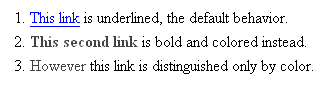

第十二天：安全地使用色彩
Safely Color 第十二天：安全地使用色彩
这个技巧基本上可以广泛地套用到网页设计的各个领域，不过在此我只会针对博客(blog)里的一种常见情形加以说明：链结文字。
有两个潜在的问题会跟颜色有关。首先，你所使用的链结文字可能跟底色的对比不够明显；任何白色底色上的淡色系文字都很糟，链结文字甚至会就这么消逝于底色之中。同样地，黑色底色上的深色系文字也很惨。事实上这个技巧不仅适用于链结文字，而是适用于所有的文字；只不过通常博客(blog)上的一般文字都可以很容易的被阅读，倒是链结文字常常一不小心就变得难以阅读。这也就是我要在此提及的原因。
第二个潜在的问题是链结装饰。如果你在 CSS 中把链结重新定义成不同的颜色，那么最好也要确定除了颜色之外，还提供了些别的线索，像是用粗体字、斜体字或加上底线等，让读者能够加以区辨。否则虽然你的链结文字能够被阅读，但有色盲的读者将无法辨别那是否是一个链结。我们将在后面的小节加以描述。
谁因此获益？
莫非 从中获益了。以下是三种不同的链结装饰组合：
正如你所看到的，第一句里的链结采用了预设的组合，会在视觉性浏览器里显示成蓝色/紫色并加上底线。第二个链结套用了两种文字装饰，会显示成红色粗体字（但是不会加上底线）。第三个链结只有套用一种文字装饰，所以只会显示成红色。
现在这里是相同的三个链结，只不过这是 莫非 所看到的样子。

如你所见，第一个链结仍然可以被清楚地看到； 莫非 的色盲并不会影响到蓝色的部分。在第二个句子中，链结的红色褪去了，几乎变成黑色；不过链结本身仍然呈现粗体字，所以 莫非 仍然可以分辨得出来。第三个链结就出问题了。因为这个链结原本只能靠红色来分辨，可是现在红色褪成黑色，于是单靠视觉将难以将之与其他寻常文字加以区辨。

怎么做
如果你要检查你的文字颜色跟背景颜色是否有“显著对比”，你可以用 VisCheck 来把你的网页模拟成色盲读者所看到的样子。
如果你要检查链结装饰的问题会不会发生，你可以在 CSS 规则里寻找 "a" 标签所会用到的样式。举例来说，如果你在 CSS 里用了下列的规则，那么你的链结将只能够用红色来加以区辨，这样是不对的：
a {
text-decoration: none;
color: red;
}你的链结可以沿用红色，但是你得确定你的链结同时也呈现成粗体字、斜体字或加上底线。如果你要让它变成红色粗体字，就只要加上一列：
a {
text-decoration: none;
color: red;
font-weight: bold; /* 只需要加上这一列 */
}延伸阅读
- VisCheck 可以模拟色盲的效果，而让你看到色盲读者所会看到的样子。你不但可以用他来检查某一张图片，也可以检查整个网页。
- Cal Henderson: Color Vision. 这里有各种色盲的实际可见色谱范围。
- Ishihara Test for Color Blindness 有一系列红绿色盲难以看清甚至完全看不到的图片。